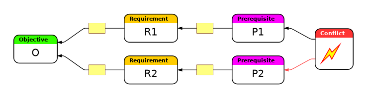
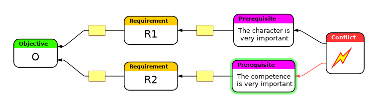

Conflict resolution using the evaporating cloud
The shape for this visual thinking tool can also be found in the examples delivered with Flying Logic.
Draw the following shape:

-

Identify the wants.
In this diagram they are named "prerequisites".
E.g. when hiring new staff you have a conflict most of the time.
One group of people will always say, that it is more important to hire someone with good social behaviour, because everything else can be learned.
Another group might argue that competence is more important.
Insert these wants.
Additional reads that extend the concept: